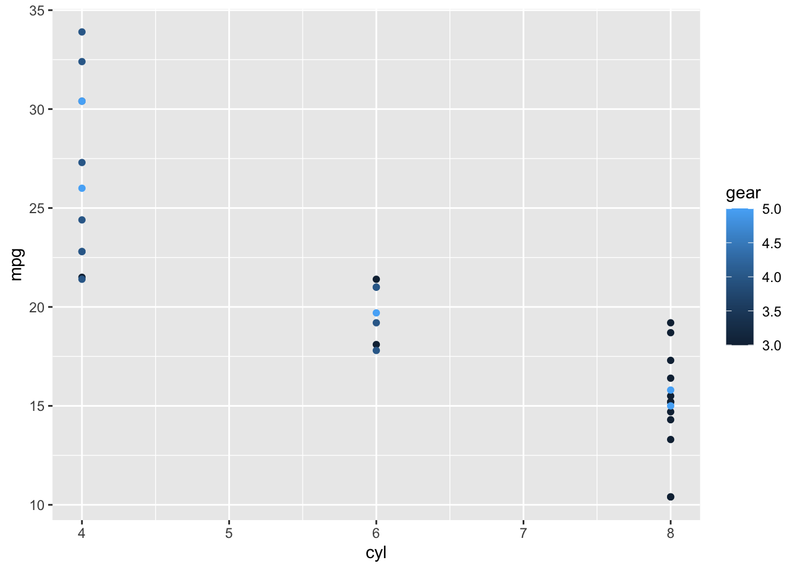

2 Test Chapter
This is the first chapter. You can treat the chapters as individual R Markdown files. You can write text that explains what is going on in the code and format it using R markdown syntax (Cheat sheet for quick start here)
Your code goes into code chunks.
a <- 1
b <- 2
c <- a + b
c## [1] 3And you can print things from your R chunks:
summary(mtcars)## mpg cyl disp hp drat wt
## Min. :10.40 Min. :4.000 Min. : 71.1 Min. : 52.0 Min. :2.760 Min. :1.513
## 1st Qu.:15.43 1st Qu.:4.000 1st Qu.:120.8 1st Qu.: 96.5 1st Qu.:3.080 1st Qu.:2.581
## Median :19.20 Median :6.000 Median :196.3 Median :123.0 Median :3.695 Median :3.325
## Mean :20.09 Mean :6.188 Mean :230.7 Mean :146.7 Mean :3.597 Mean :3.217
## 3rd Qu.:22.80 3rd Qu.:8.000 3rd Qu.:326.0 3rd Qu.:180.0 3rd Qu.:3.920 3rd Qu.:3.610
## Max. :33.90 Max. :8.000 Max. :472.0 Max. :335.0 Max. :4.930 Max. :5.424
## qsec vs am gear carb
## Min. :14.50 Min. :0.0000 Min. :0.0000 Min. :3.000 Min. :1.000
## 1st Qu.:16.89 1st Qu.:0.0000 1st Qu.:0.0000 1st Qu.:3.000 1st Qu.:2.000
## Median :17.71 Median :0.0000 Median :0.0000 Median :4.000 Median :2.000
## Mean :17.85 Mean :0.4375 Mean :0.4062 Mean :3.688 Mean :2.812
## 3rd Qu.:18.90 3rd Qu.:1.0000 3rd Qu.:1.0000 3rd Qu.:4.000 3rd Qu.:4.000
## Max. :22.90 Max. :1.0000 Max. :1.0000 Max. :5.000 Max. :8.000And cool figures via R chunks
ggplot(mtcars, aes(x=cyl, y=mpg, color=gear)) +
geom_point()